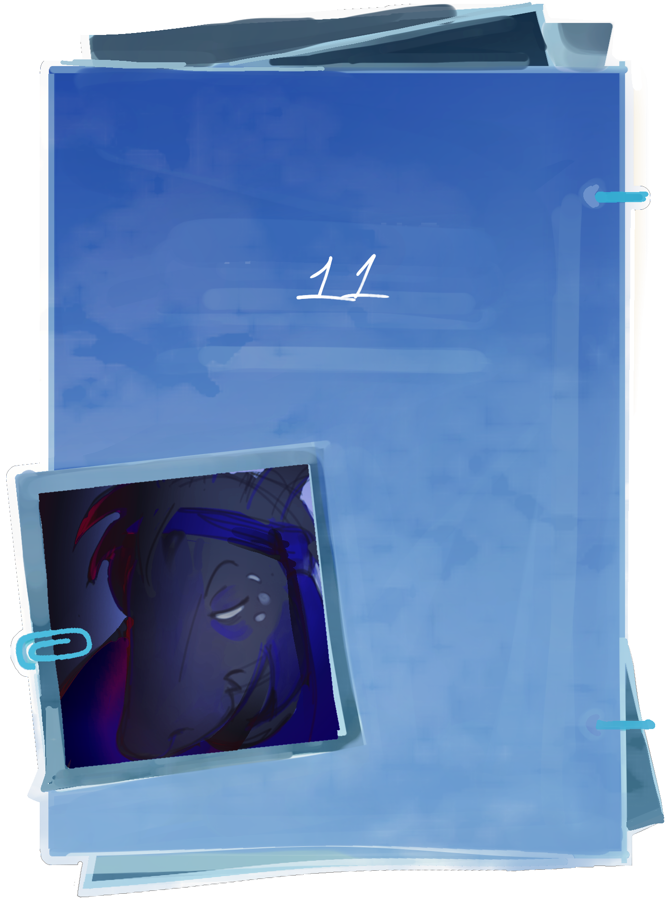
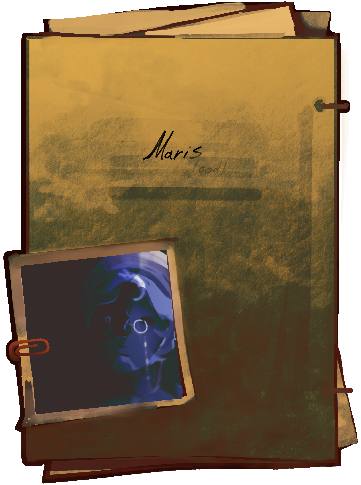

добро пожаловать в раздел другое!
здесь вы найдете информацию которую вы возможно встречали уже где то в видео или в постах архива, но не поняли до конца к чему это и так далее. вероятно что то из этого просто не является чем то важным для сюжета или время для раскрытия этого факта еще не пришло, поэтому информации этой не было выделено достаточно экранного времени. для этого здесь и собрана небольшая сборка информации в которой вы можете узнать или вспомнить о чем то.
я не профессионал и все еще учусь работать с подачей информации, так что обещаю в будущем выделить всему этому какое то время в видео :]


факты которые вы вряд ли найдете где-то еще
- события - это система похожая на исчисление времени которую использует рекс, так как тот после потери какой то части информации о себе и после стольких лет постоянно возвращаясь во времени назад из за переписи вселенной, перестал понимать работу времени практически полностью
- двери и ток имеют довольно большую роль в перемещениях.
- да, сюжетом обоснован тот факт что лор периодически видоизменяется, тем что рекс что то переписывает. и давайте будем честны, у меня не получится объяснить все нюансы работы с переписью вселенной.
- был бы способ, рекс бы вероятно покончил с собой. изначально это и была его мотивация при создании паста наконец высвободиться из этого кошмара, но из за того кем он является и довольно близок по сущности к бессмертным богам, он не может. тем более со временем он начнет примиряться с этим фактом.
- 4 сделал рекса более человечным. нигде не говорится, но как канон информация имеется. изначально рекс рассчитывал создать в рамках эксперимента что то живое и сразу же удалить так как на тот момент он был крайне слаб и не знал сможет ли сделать что то такое и им для КОСМОС нужна была дополнительная рабочая сила. вышло небольшое жижеобразное существо кем и был 4. он не был как привычный в понимании ребенок, это было просто миролюбивое, спокойное, молчаливое существо. ничего лучше чем начать воспитывать его паст и рекс не придумали(вернее паст настоял). шло время и рекс начал привязываться к нему, в общем как любой родитель почувствовав что такое желание заботиться о чем то. он начал играть с ним и засыпать рядом чтобы тому было спокойнее. ему было крайне противно, что он становится таким добрым, но уж как получилось. в итоге вырастив его ± до 19 мадженте стерли память и отправили жить в искусственный мир. вы не представляете как же рекс тогда скучал по нему и жалел что стер ему память. хотя он и сейчас каждый раз жалеет когда стирает ему память
- все миры где живут копии принадлежат серверу, что каждый раз затрачивает какое то количество его сил без его ведома. это происходит из за забагованой работы системы что копирует файл рекса и для того что существа не способны жить в пустоте, им нужен какой то мир, а на поддержание миров так же уходят силы богов.
- деталь которой нет у всех копий - лицо. да это баг. изначально при поломке оригинального файла текстуру тоже съело, а копии уже на этой основе просто не имеют лица.
- копии как мобы/нпс - пока на них не смотришь они не прогружаются и не обновляются
- да, сюжет иногда бывает абсурдным. это не ваша вселенная, для них что то, что для вас смешно может быть нормой. это распространяется на архив,инсайт, реджекшен и запределье
файлы с устаревшей информацией и будут пересмотрены и переписаны в ближайшем будущем
БОЛЕЕ ДЕТАЛЬНЫЕ ПОДРОБНОСТИ ЭКСПЕРИМЕНТОВ [ ПРИОСТАНОВЛЕНЫ ]
раздел с вопросами появится в дальнейших обновлениях, но пока что можете оставить ваши вопросы здесь мы ответим на вопросы которые посчитаем интересными
 :/другое
:/другое